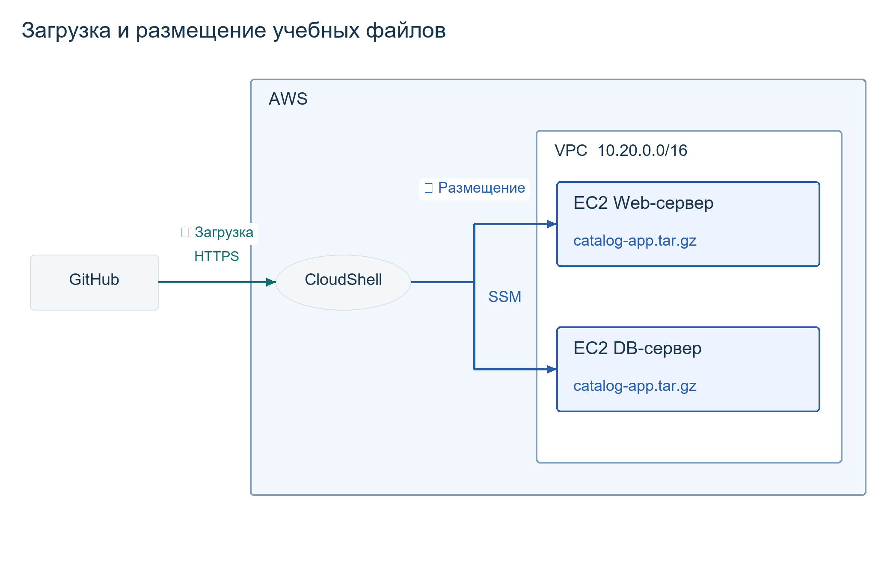

P0 Своя среда и место выполнения команд
Практика P0–P6 · Задания M0–M6
Связанное задание: M0.
Что изучаем
Выбрать нужный сервер в списке EC2, подключиться через Session Manager и проверить результат задания.
Задание
В своей готовой среде проверьте идентификаторы и роли пяти серверов, затем проверьте, к какому серверу и под каким пользователем вы подключились.
Подключение к серверам и размещение файлов для настройки

Зелёная стрелка показывает подключение к терминалу в P0.2. Синие стрелки показывают размещение файлов для настройки серверов при создании среды. Repo-сервер раздаёт пакеты для Ubuntu.
Что сделать в Practice0
Проверьте свой AWS-аккаунт, роль каждого сервера и среду выполнения команд.
Файлы для настройки серверов, размещённые при создании среды
После создания среды по общему коду архив catalog-app.tar.gz с приложением и SQL для настройки БД уже находится в /var/lib/jdu-web/lesson-resources-r1 на Web- и DB-серверах. В целях безопасности исходящие HTTPS-подключения с Web-сервера к интернету ограничены, поэтому скрипт доставляет файлы по показанному маршруту.

При создании среды по общему коду CloudShell загружает файлы для настройки серверов с GitHub и размещает их на Web- и DB-серверах через SSM.
Пример решения (порядок действий)
P0.1 Проверить instance ID пяти серверов
Среда выполнения:
AWS Console своего студенческого аккаунта
Цель и действия:
Введите EC2 в поле Search в верхней части AWS Console и откройте консоль EC2. Откройте EC2 → Instances и найдите пять серверов своей среды в столбце Name. В той же строке проверьте полный идентификатор с префиксом i- в столбце Instance ID.

Список Instances в EC2. Для P0 выберите строку с окончанием имени -web, для M0 - -db.
P0.2 Подключиться к Web-серверу через Session Manager
Среда выполнения:
SSM-терминал Web-сервера: ssm-user
Цель и действия:
Нажмите Instance ID Web-сервера, найденного в P0.1. На странице сведений нажмите стрелку справа от Connect и выберите Connect with SSM Session Manager. Выполните команды ниже в терминале новой вкладки. id -un показывает пользователя ОС, а pwd - текущий каталог. Значение web в поле role файла /etc/jdu-web/bootstrap.json подтверждает, что открыт Web-сервер. Создайте в своём домашнем каталоге файл p0-connection.txt с одной строкой web.

Страница EC2. Нажмите стрелку справа от Connect и выберите Connect with SSM Session Manager. На снимке показан Web-сервер.
Команды: нумерация внутри этого шага
# 1. Показать имя пользователя ОС в этом терминале.
id -un
# 2. Перейти в рабочий каталог $HOME.
cd "$HOME"
# 3. Показать текущий рабочий каталог.
pwd
# 4. Прочитать только role из bootstrap, чтобы проверить выбранный сервер.
python3 -c 'import json;print(json.load(open("/etc/jdu-web/bootstrap.json"))["role"])'
# 5. Записать одну строку web в проверочный файл домашнего каталога.
printf '%s\n' web > "$HOME/p0-connection.txt"
# 6. Прочитать $HOME/p0-connection.txt без изменения.
cat "$HOME/p0-connection.txt"
Ожидаемый результат и его смысл:
Команда id -un выводит ssm-user, команда pwd после перехода в домашний каталог выводит /home/ssm-user, а роль и содержимое файла имеют значение web.
В приглашении видны имя пользователя, имя узла и текущий каталог. ~ означает домашний каталог, а pwd показывает полный путь. Если настройка не смогла включить это отображение и видно только $, выполните следующую строку. Завершите сеанс командой exit.
exec env PS1='\u@\h:\w\$ ' bash --norc -i

Терминал Session Manager. После настройки приглашение обновляет текущий каталог при переходе.
P0.3 Открыть рабочий стол бастиона по RDP
Среда выполнения:
Windows PC студента (общая учётная запись)
Цель и действия:
Используйте текущий public IPv4 бастиона из EC2. Нажмите Windows+R, введите mstsc /prompt и Enter. В Computer укажите IP, пользователь labuser, пароль - свой RDP из начальной установки, не пароль Windows. Не выбирайте сохранение credentials. Если появится синий login xrdp, выберите Session=Xorg и labuser.

Нажмите Windows+R, чтобы открыть окно «Выполнить», и введите mstsc /prompt в поле «Открыть».
Команды: нумерация внутри этого шага
# 1. Открыть RDP Windows с запросом учётных данных.
mstsc /prompt
Смысл команд и настроек:
RDP передаёт экран и ввод бастиона. Запрос Firefox внутри RDP идёт от бастиона, а не Windows. Раскладка клавиатуры влияет на символы пароля; язык интерфейса и раскладка - разные настройки.
Ожидаемый результат и его смысл:
Открываются Xfce и Firefox внутри Ubuntu-бастиона. Это не браузер Windows. labuser не имеет sudo: настройку выполняйте через CloudShell → SSM/ssm-user.
Если не получилось:
При Login failed проверьте имя и раскладку клавиатуры. Не отправляйте пароль в чат. При недоступности сверьте текущий IP и разрешённый CIDR с преподавателем; не открывайте 3389 для всех. Перед закрытием RDP сохраните работу.
Проверка и сдача
Скрипт начальной настройки создаёт в AWS сервис проверки заданий (Lambda). После упражнения с RDP войдите на указанную преподавателем страницу через учебный аккаунт Google, выберите свой Lab и P0 и запустите проверку. Верный файл из одной строки web в вашем домашнем каталоге на Web-сервере даёт 1 балл. Проверьте, что балл сохранён.
Проверка понимания (без баллов)
Какой узел изменится, если выполнить шаги DB в открытом SSM-сеансе Web?
Объяснение:
Команды выполняются на подключённом Web-сервере. Для работы с DB выберите DB-сервер в списке EC2 и откройте новый терминал через Session Manager.